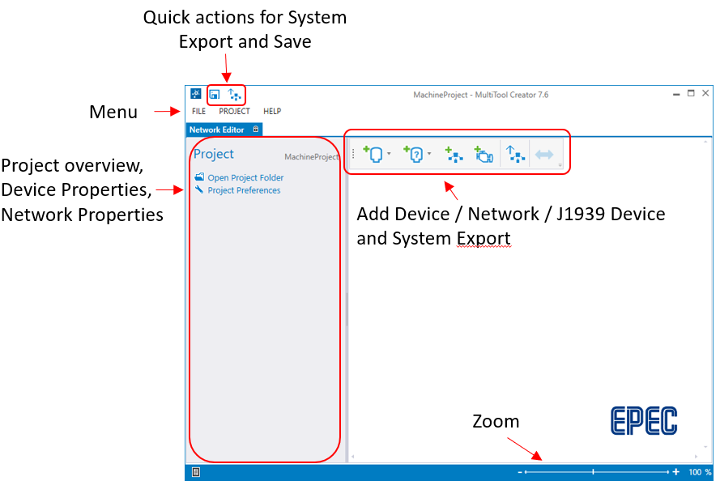
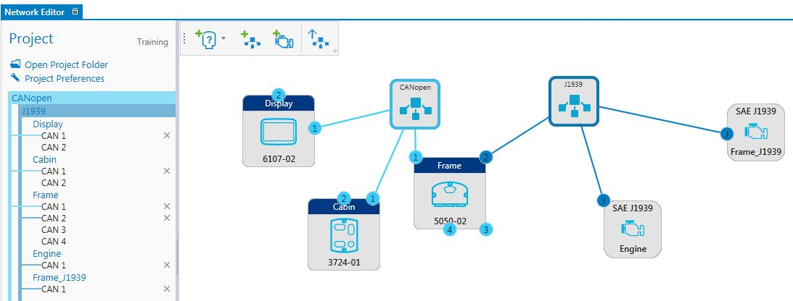
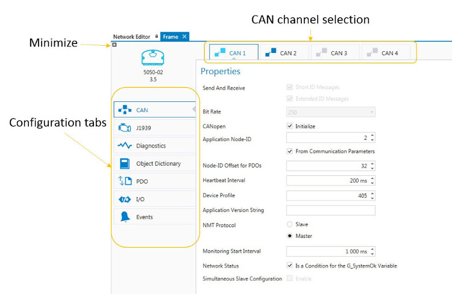

This topic briefly describes the user interface.

All the added devices and their network connections are displayed in the Network Editor. The devices can be configured by double-clicking them or selecting icon from the hover menu.

In the device Configuration view, the Configuration tabs are listed on the left. The CAN channel is selected from upper tabs.

Epec Oy reserves all rights for improvements without prior notice.
Source file topic200035.htm
Last updated 25-Jun-2025